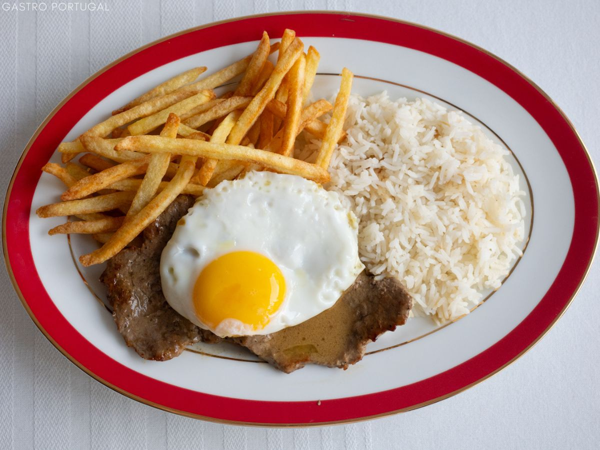

Bitoque

Descrição
O bitoque é um prato tradicional português composto por bife de vaca grelhado, ovo estrelado, batatas fritas, arroz e salada.
A origem do nome é obscura, mas acredita-se que possa ter a ver com um imigrante galego que trouxe a receita para Portugal e deu o seu nome ao prato.
Ingredientes
- Bife de vaca
- Azeite
- Manteiga
- Dentes de alho
- Folhas de louro
- Mostarda
- Vinho branco
- Ovo
- Caldo de Carne
- Sal
- Limão
Passos
- Começa por bater o bife com ajuda de um martelo para carne
- Tempere com o alho laminado, sal, as folhas de louro e reserve
- Entretanto corte as batatas em palitos bem fininhos
- Lave as batatas até que a água saia limpa
- Escorra as batatas da melhor forma que conseguir. Eu gosto de usar um escorredor de salada mas pode usar uma toalha ou papel absorvente
- Frite em óleo quente até que fiquem douradinhas
- Coloque sobre papel absorvente, tempere com sal e reserve
- Entretanto aqueça um pouco de azeite numa frigideira
- Junte a manteiga as folhas de louro e frite o bife de ambos lados com o lume baixo
- A ideia é confitar a carne e não fritar verdadeiramente
- Quando a carne estiver praticamente cozinhada, junte a mostarda, o caldo de carne e o vinho branco
- Envolva todos os ingredientes e deixe reduzir o molho
- Passe a carne para um prato de barro e derrame o molho por cima
- Frite um ovo num pouco de azeite e coloque em cima da carne
- Disponha as batatas à volta do bife e junte uma fatia de limão
Voltar ao Início